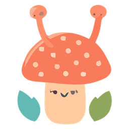

今晚想听点什么呀？
故事放睡前，定时 15–30 分钟；英语放早上或饭后，家长陪着听、跟着念一遍最管用。
故事与学习记录只存在这台设备里
断网也能用，不上传任何内容
内置故事都是预生成的人声音频，锁屏、息屏都能接着听，耳机和锁屏界面里也能切上一集 / 下一集。万一网络取不到音频，会自动改用手机朗读顶上，那时需要亮屏。
每个单词都配了真人发音，点一下图鉴里的小卡片就能听。导入教材音频后，也可以在这里单独播放。
听两遍，跟着读一遍。看完这一组，今天的英语就完成啦。
学了 5 个词
会删除导入的音频和学习记录，不可恢复。